Professional Experience Portfolio
Table of Contents
- Standard 1 – Know students and how they learn
- 1.1 Physical, social and intellectual development and characteristics of students
- 1.2 Understand how students learn
- 1.3 Students with diverse linguistic, cultural, religious and socioeconomic backgrounds
- 1.4 Strategies for teaching Aboriginal and Torres Strait Islander students
- 1.5 Differentiate teaching to meet the specific learning needs of students across the full range of abilities
- 1.6 Strategies to support full participation of students with disability
- Standard 2 – Know the content and how to teach it
- 2.1 Content and teaching strategies of the teaching area
- 2.2 Content selection and organisation
- 2.3 Curriculum, assessment and reporting
- 2.4 Understand and respect Aboriginal and Torres Strait Islander people to promote reconciliation between Indigenous and non-Indigenous Australians
- 2.5 Literacy and numeracy strategies
- 2.6 Information and Communication Technology (ICT)
- Standard 3 – Plan for and implement effective teaching and learning
- Standard 4 – Create and maintain supportive and safe learning environments
- Standard 5 - Assess, provide feedback and report on student learning
- Standard 6 - Engage in professional learning
- Standard 7 – Engage professionally with colleagues, parents/carers and the community
Standard 1 – Know students and how they learn
1.1 Physical, social and intellectual development and characteristics of students
“Demonstrate knowledge and understanding of physical, social and intellectual development and characteristics of students and how these may affect learning.”
Evidence
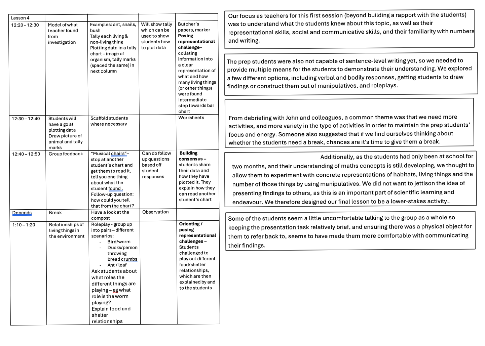
Adapted IMS Learning plan and reflection on student characteristics
Commentary
This evidence demonstrates my understanding of students’ physical, social and intellectual development and how these characteristics influence learning. This is part of an IMS Learning module on ecology, originally designed for Grade 1 students. I, along with another pre-service teacher, was tasked with teaching this sequence to Foundation students early in the first term of the year. We adapted the lessons for these students to ensure the learning experiences were developmentally appropriate and accessible. In making these adjustments, we considered the students’ emerging literacy, attention spans, prior knowledge, fine and gross motor abilities, and capacity to engage with instructions independently. We incorporated greater scaffolding, simplified instructions and more opportunities for teacher modelling and guided participation. These adaptations demonstrate my ability to recognise that students develop at different rates and require learning experiences that respond to their individual needs. I think this evidence shows that I meet this standard by observing students, using knowledge of their developmental characteristics to inform planning, and adjusting teaching strategies and learning activities to support engagement, participation and learner success.
1.2 Understand how students learn
“Demonstrate knowledge and understanding of research into how students learn and the implications for teaching.”
Evidence
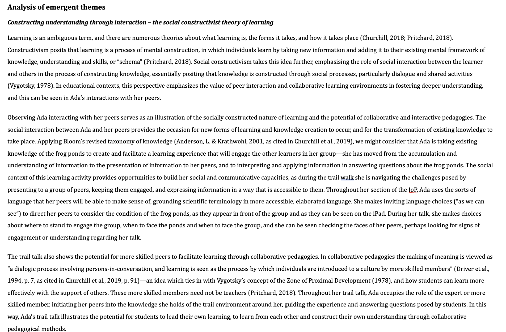
Assignment excerpt exploring how students learn and teach one another
Commentary
This evidence demonstrates my understanding of research into how students learn and the implications this has for teaching practice. In my analysis of a student-led trail talk, I explored learning as a socially constructed process, recognising that students develop knowledge through interaction, discussion and the sharing of perspectives with others. The trail talk provided opportunities for students to actively contribute to learning, construct meaning collaboratively and develop understanding through dialogue with their peers. This reflects the value of collaborative pedagogies and the importance of positioning students as active participants (and at times, even as experts) rather than passive recipients of knowledge. I think this excerpt also demonstrates an awareness of the theory and research underpinning current understandings of how students construct knowledge (such as Vygotsky’s Zone of Proximal Development and social constructivism), and how effective teaching requires consideration of how to enable students to do this, engage with others and connect new learning to existing understandings.
1.3 Students with diverse linguistic, cultural, religious and socioeconomic backgrounds
“Demonstrate knowledge of teaching strategies that are responsive to the learning strengths and needs of students from diverse linguistic, cultural, religious and socioeconomic backgrounds.”
Evidence
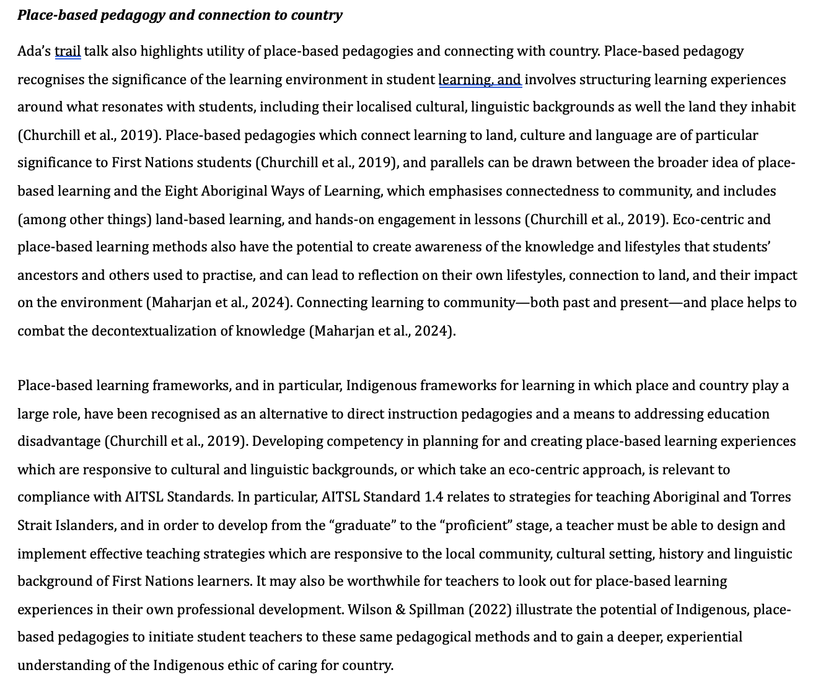
Assignment excerpt exploring the potential of place-based pedagogy to reach diverse learners
Commentary
This evidence demonstrates my understanding of teaching strategies that respond to the diverse linguistic, cultural and social backgrounds of students. In my analysis of place-based pedagogies and connecting with Country, I explored how learning can be grounded in students’ local environments and lived experiences. This approach provides opportunities to recognise and value students’ cultural and linguistic knowledge, while helping them develop meaningful connections between curriculum content, community and the places in which they live. I also considered the particular significance of connecting with Country for First Nations students, recognising the importance of culturally responsive practice and respectful engagement with Aboriginal and Torres Strait Islander perspectives. Overall I think this excerpt demonstrates an awareness of how seeking to understand students’ backgrounds, strengths and experiences and incorporating different pedagogical approaches can serve the needs of diverse learners and enhance overall teaching and learning.
1.4 Strategies for teaching Aboriginal and Torres Strait Islander students
“Demonstrate broad knowledge and understanding of the impact of culture, cultural identity and linguistic background on the education of students from Aboriginal and Torres Strait Islander backgrounds.”
Evidence
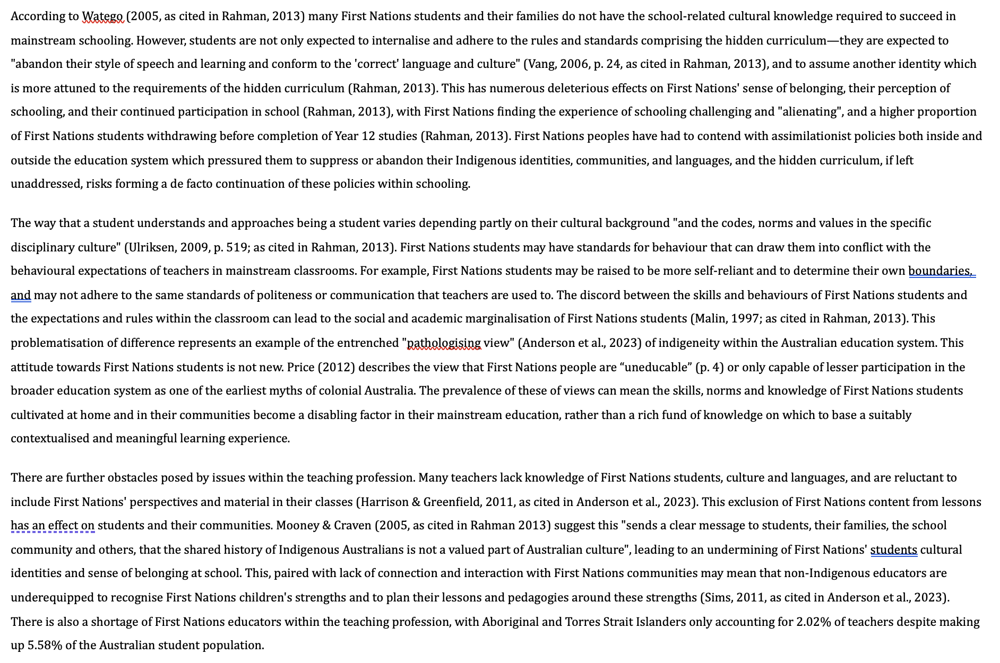
Assignment excerpt exploring the impact of First Nations cultural and linguistic background on schooling experience
Commentary
This excerpt demonstrates my understanding of how culture, cultural identity and linguistic background can influence the educational experiences of Aboriginal and Torres Strait Islander students. In my discussion of the hidden curriculum, I explored how unspoken expectations and norms within schools can pressure First Nations students to conform to dominant cultural and linguistic practices, potentially creating tension between students’ identities and school expectations. I also considered how teachers may interpret culturally different behaviours through a deficit or pathologising lens, contributing to misunderstanding, conflict and marginalisation. Furthermore, my discussion of the limited representation of First Nations knowledge and perspectives in curriculum (and in staffing) highlights how education can privilege dominant knowledge systems while overlooking Indigenous ways of knowing. Overall I think this evidence shows I am aware of the potential impacts of culture, cultural identity and linguistic background on the education of students from Aboriginal and Torres Strait Islander backgrounds, and of the need to critically reflect on how school and teaching practices can either support or constrain students’ cultural identity and educational participation.
1.5 Differentiate teaching to meet the specific learning needs of students across the full range of abilities
“Demonstrate knowledge and understanding of strategies for differentiating teaching to meet the specific learning needs of students across the full range of abilities.”
Evidence
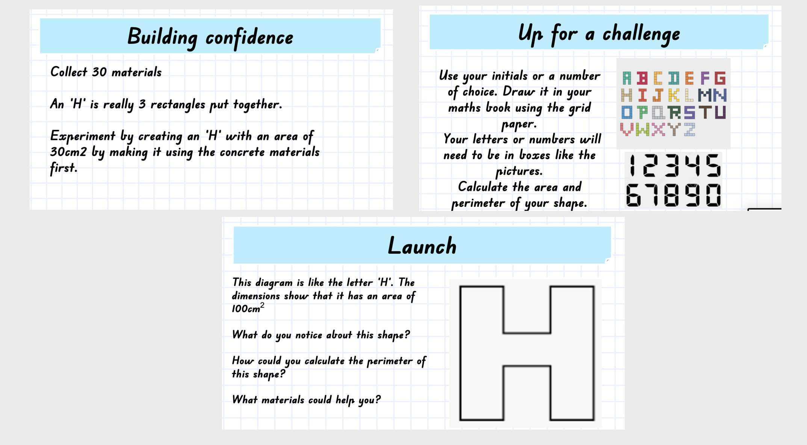
A maths lesson offering learners varying degrees of support and complexity
Commentary
This evidence demonstrates my understanding of strategies for differentiating teaching to meet the learning needs of students across a range of abilities. In my mathematics lesson on calculating the area and perimeter of letter shapes, I designed three levels of the activity: “Building Confidence”, “Launch” and “Up for a Challenge”. This structure enabled students to engage with the same mathematical concepts while working at an appropriate level of complexity. The “Building Confidence” activity incorporated manipulatives to provide concrete support for students developing their understanding, while the more complex task encouraged students to represent and communicate their mathematical investigations independently in their books. This demonstrates my understanding that differentiation can involve adjusting the level of challenge, scaffolding and modes of representation rather than simply changing learning content. I think this shows that I can use my knowledge of students’ strengths and needs to plan accessible learning experiences that provide both appropriate support and opportunities for extension.
1.6 Strategies to support full participation of students with disability
“Demonstrate broad knowledge and understanding of legislative requirements and teaching strategies that support participation and learning of students with disability.”
Evidence
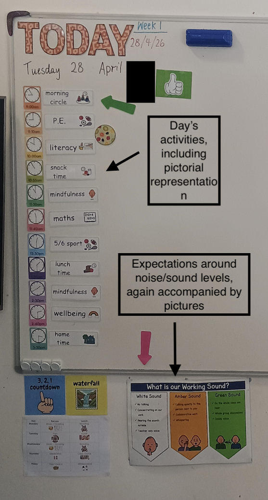
A photo of a visual organiser displaying activities for the day ahead
Commentary
The various Commonwealth Discrimination Acts, the Victorian Equal Opportunity Act (2010), our States’ Charter of Human Rights and Responsibilities, and our Code of Conduct require us to ensure all students have an opportunity to learn, and that we make reasonable adjustments to account for the different needs, abilities and characteristics of learners. Often in considering the supports we can provide particular learners, we might discover changes, adjustments, or supports that can benefit all learners.
The Visual Organiser demonstrates how these principles can be translated into practical classroom strategies. Visual schedules, first-then structures, noise level indicators and other organisers can reduce barriers for students with disability, including students who are neurodivergent, experience anxiety or have emerging literacy skills. Importantly, these adjustments can benefit all learners by reinforcing routines, supporting independence and making expectations more accessible. I believe this shows I demonstrate this standard by identifying barriers to participation, implementing reasonable adjustments and recognising inclusive practices as opportunities to create learning environments in which all students can participate and succeed.
Standard 2 – Know the content and how to teach it
2.1 Content and teaching strategies of the teaching area
“Demonstrate knowledge and understanding of the concepts, substance and structure of the content and teaching strategies of the teaching area.”
Evidence
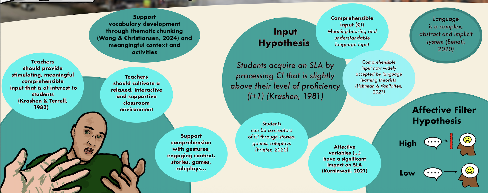
A poster assignment outlining theories and approaches for teaching languages
Commentary
This evidence demonstrates my knowledge and understanding of the content, structure and teaching strategies relevant to language education. My teaching poster brought together key principles of language acquisition and turned them into a practical lesson sequence themed around transportation. In particular, my consideration of the Input Hypothesis and Affective Filter Hypothesis demonstrates an understanding of the importance of providing students with stimulating, comprehensible language input while maintaining a supportive and low-anxiety classroom environment. I also addressed the nature of language and strategies for developing vocabulary, demonstrating awareness of the knowledge and skills students need to develop proficiency. The poster further identifies the teacher’s role in modelling language, facilitating meaningful interaction and creating opportunities for students to engage with new vocabulary and structures. I think the poster shows I can connect my knowledge of curriculum content with evidence-informed pedagogies and approaches to plan learning experiences that support students’ development of language knowledge and skills.
2.2 Content selection and organisation
“Organise content into an effective learning and teaching sequence.”
Evidence
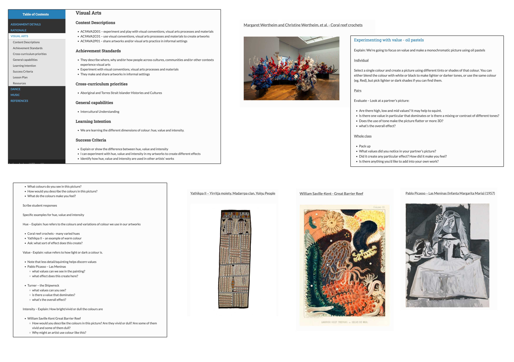
An image showing curriculum content, lesson activities, resources organised into an Arts lesson sequence
Commentary
This image is drawn from a three lesson Arts sequence I planned, centred on the theme of artists and the ocean. There was a lesson on each of Visual Arts, Music and Dance. In each lesson, I paired a variety of resources and learning experiences to introduce, develop and reinforce specific concepts and skills, all while exploring the overarching ocean theme. For example, the Visual Arts resources included artworks to demonstrate the concepts of hue, value and intensity, providing students with clear examples to support their understanding before they moved on to applying these concepts in their own work or in responding to the works of others. The sequence therefore demonstrates my capacity to organise related content and resources to deliver a learning sequence that builds students’ understanding, aligns strongly with the achievement standards and content descriptors of the (in this case) Arts learning area of the Australian Curriculum, while maintaining a consistent and engaging central theme. I also incorporated links to other components of the Australian Curriculum, such as the Intercultural Understanding general capability, and the Aboriginal and Torres Strait Islander Histories and Cultures cross-curriculum priority.
2.3 Curriculum, assessment and reporting
“Use curriculum, assessment and reporting knowledge to design learning sequences and lesson plans.”
Evidence
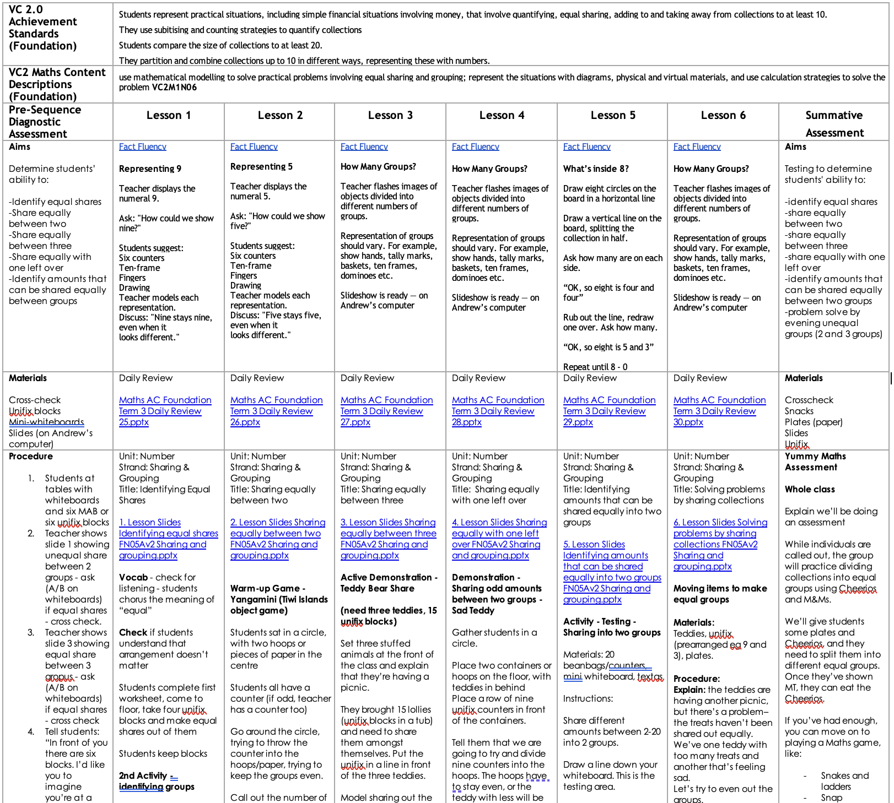
A Maths lesson sequence informed by curriculum achievement standards and diagnostic testing
Commentary
This evidence demonstrates my ability to apply curriculum and assessment knowledge when designing sequenced learning experiences and lesson plans. I developed a Foundation Mathematics learning sequence on sharing and collections that was aligned with the relevant Achievement Standards, ensuring that the planned learning addressed the required knowledge and skills. I used a pre-sequence diagnostic assessment to identify students’ existing understandings and used this information to inform the content, level of challenge and progression of subsequent lessons. The sequence progressively developed students’ capacity to classify and compare collections, determine equality, share collections into two or three equal groups, identify remainders, and manipulate objects to create equal groups. I concluded the sequence with an individual student–teacher conference, enabling me to assess students’ achievement of the intended learning outcomes and identify areas requiring further development. This demonstrates my capacity to use curriculum, asssessment and reporting knowledge to plan coherent make learning sequences and lesson plans.
2.4 Understand and respect Aboriginal and Torres Strait Islander people to promote reconciliation between Indigenous and non-Indigenous Australians
“Demonstrate broad knowledge of, understanding of and respect for Aboriginal and Torres Strait Islander histories, cultures and languages.”
Evidence
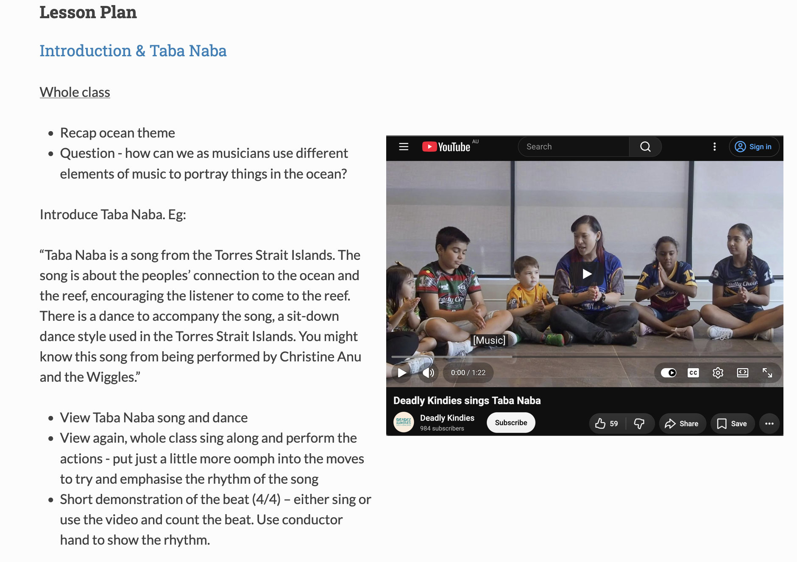
Picture from Arts lesson plan incorporating First Nations materials
Commentary
I chose this picture because I think it illustrates my respect for Aboriginal and Torres Strait Islander knowledge and culture, and my commitment to including it in my practice. I think incorporating Aboriginal and Torres Strait Islander materials into the curriculum is a vital part of promoting reconciliation between Indigenous and non-Indigenous Australians. But beyond the curriculum, schools and teachers can take steps to try and embed Aboriginal and Torres Strait Islander histories and culture into the school and classroom culture. This embedding helps to promote examination of one’s own conception of self as well as inter- and cross-cultural understanding.
It is important not to gloss over the diversity in Aboriginal and Torres Strait Islander peoples and cultures. Ideally educational programs should be developed with the involvement of local Aboriginal or Torres Strait Islander community groups and parents. The Victorian Aboriginal Education Association Inc. (VAEAI) organises regional consultative groups called Local Aboriginal Education Consultative Groups (LAECG), who provide advice or work with educators to develop educational programs that promote reconciliation.
2.5 Literacy and numeracy strategies
“Know and understand literacy and numeracy teaching strategies and their application in teaching areas.”
Evidence
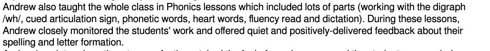
Comments on my phonics instruction from a mentor teacher
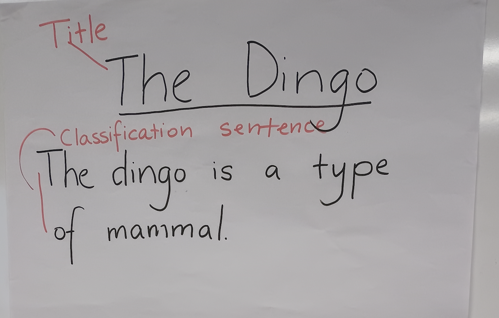
An anchor chart about features of informative texts
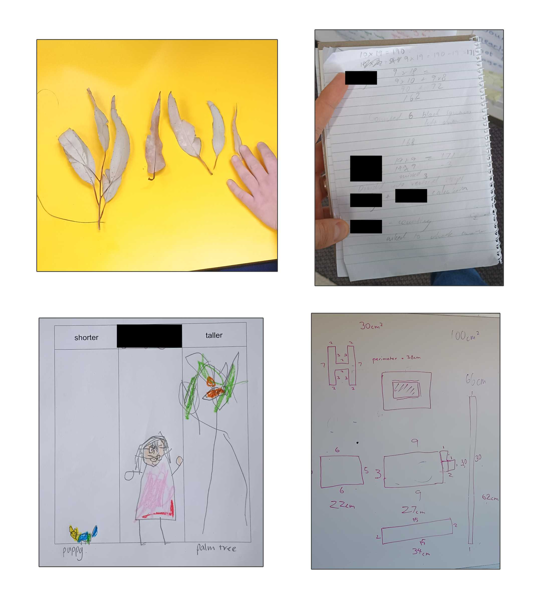
Various strategies used in Maths lessons
Commentary
This evidence demonstrates my understanding and application of literacy and numeracy teaching strategies across the curriculum. In Mathematics, I use concrete materials, such as leaves, to develop students’ conceptual understanding of measurement, length and comparison before progressing to pictorial and abstract representations. I also record observations and student responses to identify misconceptions, provide targeted feedback and to inform lesson reflection, as demonstrated through the class investigation of different areas and perimeters that could be made using 30cm².
In literacy, my practice includes (among other things) explicit phonics instruction, immediate feedback, teacher modelling and visual scaffolds. The information-text anchor chart provides a model of structure and language features, while sentence frames support students to construct increasingly independent sentences.
These strategies reflect my broader understanding of effective literacy and numeracy pedagogy, including explicit instruction, questioning, scaffolding, guided practice, and providing opportunities for students to explain and apply their learning (including in response to feedback).
2.6 Information and Communication Technology (ICT)
“Implement teaching strategies for using ICT to expand curriculum learning opportunities for students.”
Evidence
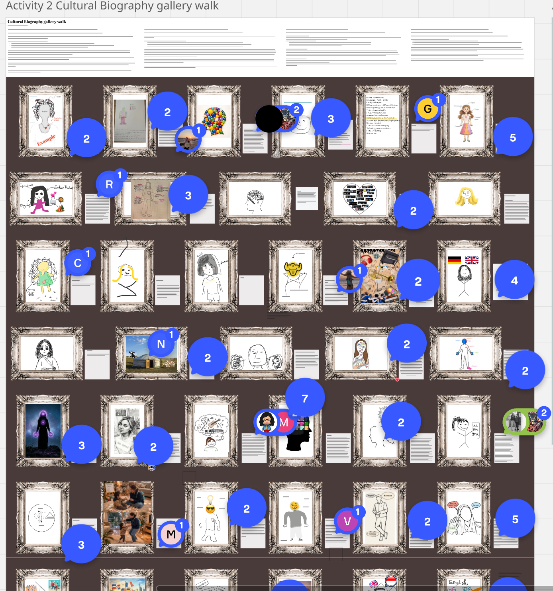
A cultural biography “gallery walk”, hosted on a Miiro Digital Whiteboard
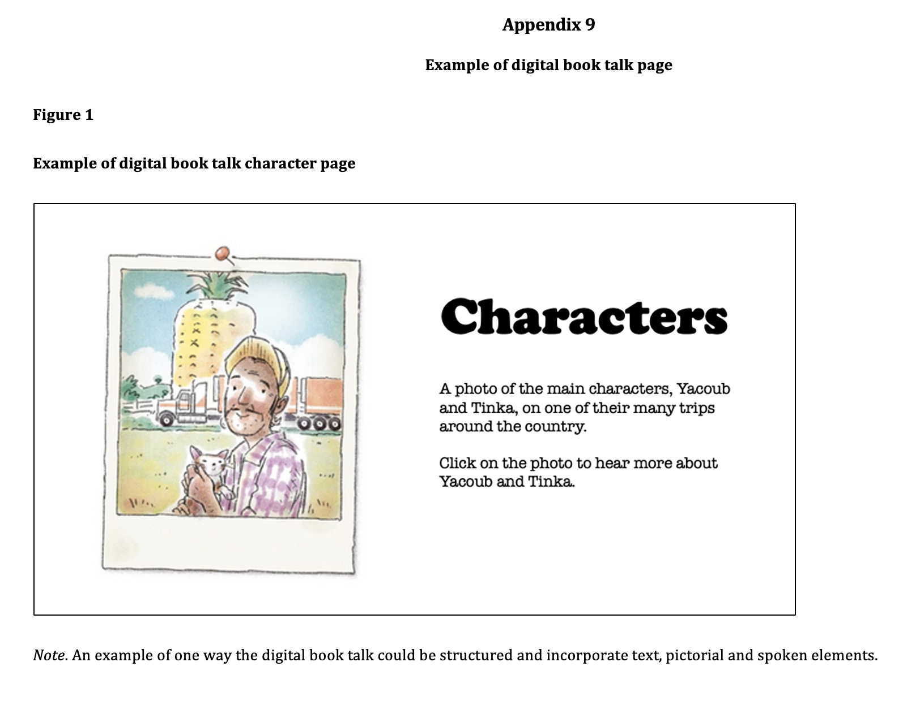
A digital “book talk”
Discussion
I chose these pictures because I think they illustrate how ICT can expand learning opportunities for students.
Technologies such as digital whiteboards provide an opportunity for learners to collaborate and construct class understanding of different topics and ideas. For example, the whiteboard above involved learners examining their own and others’ language learning identities and understandings of the idea of culture.
Digital technologies can also be used to develop learners’ multimodal literacy. Software presentations like the “digital book talk” above give learners an opportunity to incorporate pictorial, textual, spoken (and perhaps other) elements into their understanding of and response to a given text.
Learners can be supported to use ICT through direct instruction (which can even be presented digitally, as in the whiteboard space) and through the use of prepared examples (as with the book talk). Teachers can model how to use the these and other digital tools. In some cases (as with the whiteboard) students may have a “sandbox” or other low-stakes environment in which to gain familiarity with the tool.
Standard 3 – Plan for and implement effective teaching and learning
3.1 Establish challenging learning goals
“Set learning goals that provide achievable challenges for students of varying abilities and characteristics.”
Evidence
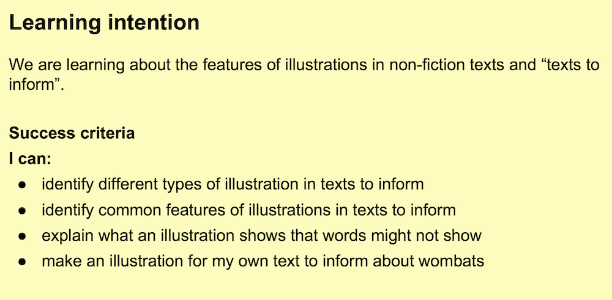
Learning Intention and Success Criteria for a session on information texts
Commentary
This evidence demonstrates my ability to set learning goals that provide achievable challenges for students with varying abilities and characteristics. In my lesson on illustrations in non-fiction “texts to inform”, I established a clear learning intention supported by success criteria that progressively developed students’ understanding. Students were expected to identify different types of illustrations, recognise common features, explain how illustrations can communicate information that text may not, and apply this knowledge by creating an illustration for their own information text about wombats. These goals provide a progression from identifying and recognising to explaining and creating, allowing students to build knowledge before applying it independently. These goals also allow some degree of flexibility, meaning that students can address them in ways that suitably challenge them or provide an opportunity to demonstrate the depth of their understanding. For example, an illustration of a wombat can be more or less detailed, include features of a wombat’s habitat, or include features such as labels.
3.2 Plan, structure and sequence learning programs
“Plan lesson sequences using knowledge of student learning, content and effective teaching strategies.”
Evidence
Commentary
This evidence demonstrates my ability to plan coherent lesson sequences using knowledge of student learning, curriculum content and effective teaching strategies. My sequence on sharing and collections incorporated consistent components, including quick fact fluency, a daily review and a main lesson, providing Foundation students with opportunities to revisit prior learning before engaging with new content. The main lesson combined explicit teaching through slides with demonstrations using physical materials. For example, I used teddies at a “picnic” to model sharing treats equally, demonstrating myself before inviting students to participate in the demonstration. This approach connected abstract mathematical concepts to an engaging, familiar context while incorporating modelling, questioning and student participation.
I think this shows that I am capable of sequencing learning over the course of a unit and within a lesson, moving from review and explicit instruction towards supported and then independent application, and that to do this I select strategies that reflect students’ prior knowledge, interests and ways of learning.
3.3 Use teaching strategies
“Include a range of teaching strategies.”
Evidence
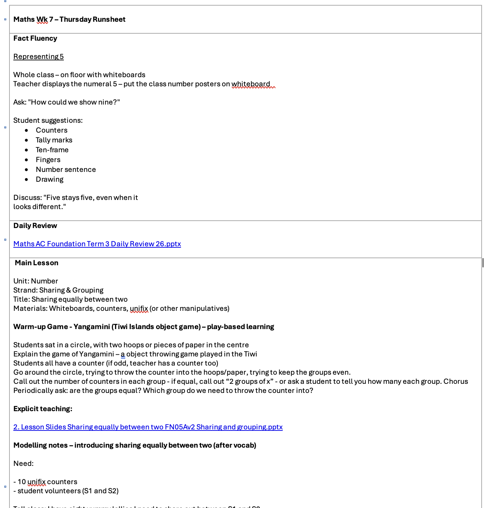
A Maths lesson runsheet showing a range of teaching strategies
Commentary
This evidence demonstrates my ability to employ a range of teaching strategies to support student learning. In my mathematics lesson on sharing and collections, I incorporated explicit teaching through slides alongside concrete demonstrations using materials such as Unifix blocks. This combination allowed students to encounter mathematical concepts through both visual representations and hands-on experiences. I also incorporated a warm-up game, based on a variation of Yangamini, to provide an interactive and engaging context for practising sharing. During the activity, I used questioning to prompt students to consider the number of objects in each group and encouraged them to respond chorally, providing opportunities for participation and immediate reinforcement of understanding. I recognise the value of varying instructional approaches to maintain engagement, support different ways of learning and provide multiple opportunities to develop understanding.
3.4 Select and use resources
“Demonstrate knowledge of a range of resources, including ICT, that engage students in their learning.”
Evidence
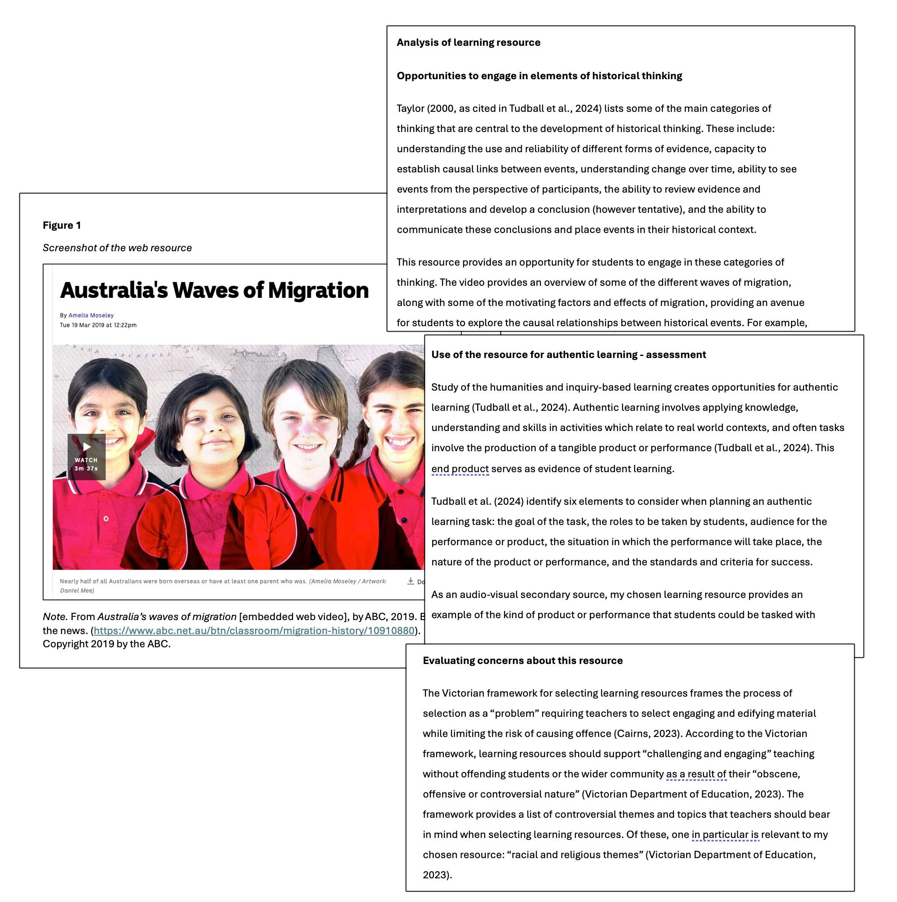
A Behind the News video resource suitable for classroom use
Commentary
This evidence demonstrates my ability to identify, evaluate and use a range of resources, including ICT, to engage students in meaningful learning. In my analysis of a Behind the News (BTN) video about Waves of Migration to Australia, I considered how digital media can support historical thinking by presenting content through an accessible and authentic format. I identified opportunities for students to critically engage with the resource and potentially use it as a model for producing their own videos, positioning ICT as a tool for creating and communicating knowledge rather than simply consuming information. Importantly, my analysis also considered potential concerns about the resource in relation to the Victorian framework for selecting learning resources, demonstrating that resource selection requires critical evaluation of suitability, accuracy and educational value. This is only one example of resource use–other resources I have used include books, websites, videos, lesson plans or activities, excursion sites, incursions, and so on.
3.5 Use Effective Classroom Communication
“Demonstrate a range of verbal and non-verbal communication strategies to support student engagement.”
Evidence
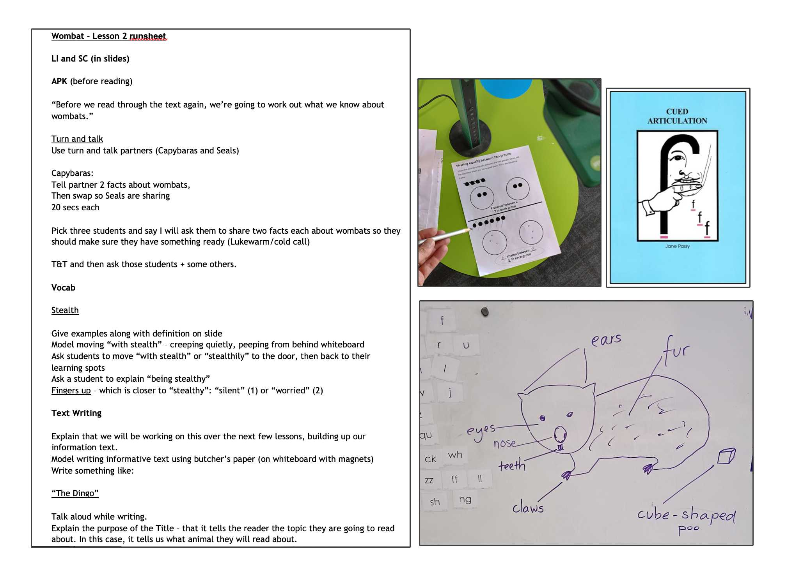
Examples of different methods for communicating with students
Commentary
This evidence demonstrates my ability to use a range of verbal and non-verbal communication strategies to support student engagement and understanding. In my lessons I plan for clear verbal explanations, talk-alouds, examples supported by gesture and movement, and cold-calling, including preparing students for questions so that the expectation of participation remained supportive. My use of a projector to demonstrate a worksheet and modelling an informative illustration on the whiteboard further demonstrates how visual communication can make instructions and processes explicit. I also used cued articulation to support students’ understanding of speech sounds through visual and physical cues. These strategies provide students with multiple ways to access information while maintaining their attention and participation, and I regularly incorporate various forms of questioning, gestures, modelling and other visual supports in my teaching practice.
3.6 Evaluate and improve teaching programs
“Demonstrate broad knowledge of strategies that can be used to evaluate teaching programs to improve student learning.”
Evidence
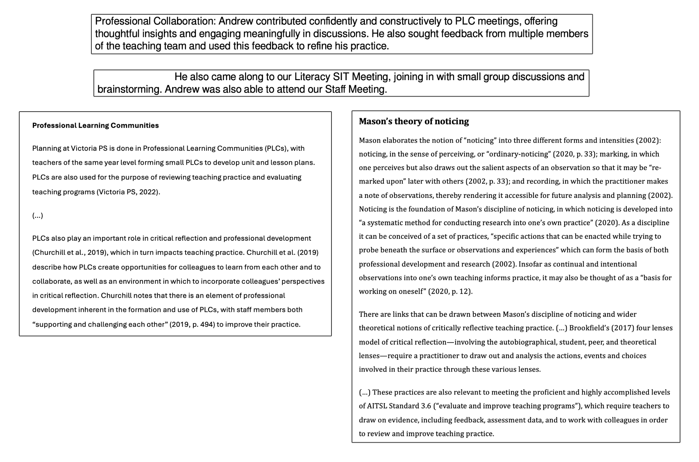
Mentor commentary and assignment excerpts regarding evaluating teaching practice
Commentary
This evidence demonstrates my broad understanding of strategies for evaluating teaching programs and using evaluation to improve student learning. My assignments explore the role of Professional Learning Communities (PLCs) in collaboratively examining teaching practice, student data and learning outcomes to identify areas for improvement. I also discuss Mason’s Discipline of Noticing and Brookfield’s four lenses of critical reflection as frameworks for systematically examining teaching decisions and their impact on students. Feedback from my mentor teachers confirms my participation in PLC, all staff and School Improvement Team (SIT) meetings, providing opportunities to engage in collaborative evaluation and school-wide improvement processes. Other strategies I have considered include analysing student assessment data and work samples, seeking feedback from colleagues and students, classroom observation, reviewing lesson outcomes against intended learning, and engaging with professional literature and research. Together, this evidence demonstrates my capacity to evaluate teaching from multiple perspectives and to use evidence-based reflection to refine practice and improve student learning.
3.7 Engage parents / carers in the educative process
“Describe a broad range of strategies for involving parents/carers in the educative process.”
Evidence
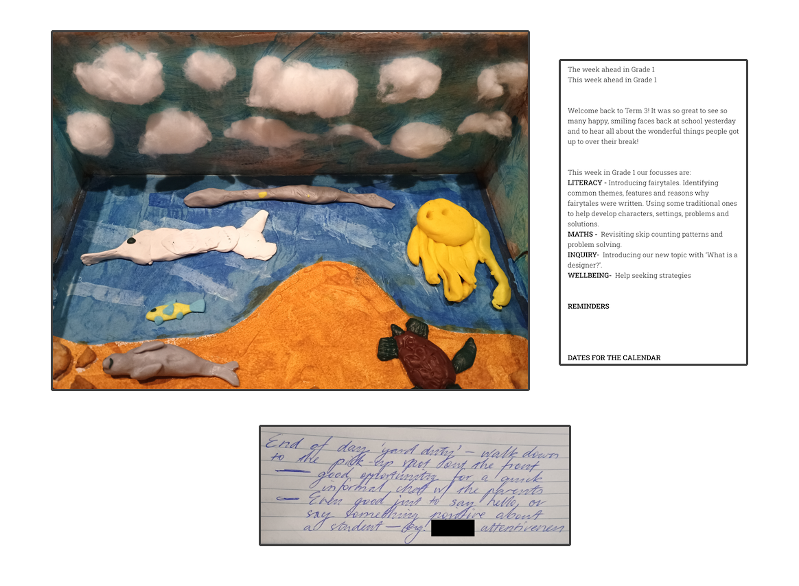
Three different ways of involving parents and carers in students’ education
Commentary
I chose this image because it captures some of the strategies I encountered and used for involving parents and carers in the educative process.
The weekly newsletter provides families with regular information about classroom learning, helping them understand what students are learning and providing opportunities to discuss and reinforce learning at home.
The diorama was a take-home task for students, with background information and instructions provided to parents and carers, directly involving them in their child’s learning about different types of environments and the construction of the diorama. The activity culminated in a presentation of student dioramas, in which parents and carers could visit the classroom.
The diary note is about the end-of-day yard duty, in which I and the other teachers would walk students down to the school drop-off area and chat with parents and carers. During these brief interactions we might note student achievements or positive behaviour at school, helping to keep families involved in their childs’ education and to build relationship with carers.
Beyond the strategies outlined here, a teacher could also try to incorporate family knowledge and experiences into learning programs, provide other opportunities to visit classrooms or attend open days, or design other learning experiences that culminate in students sharing their work with parents and carers (often a compelling audience for students).
Standard 4 – Create and maintain supportive and safe learning environments
4.1 Support student participation
“Identify strategies to support inclusive student participation and engagement in classroom activities.”
Evidence
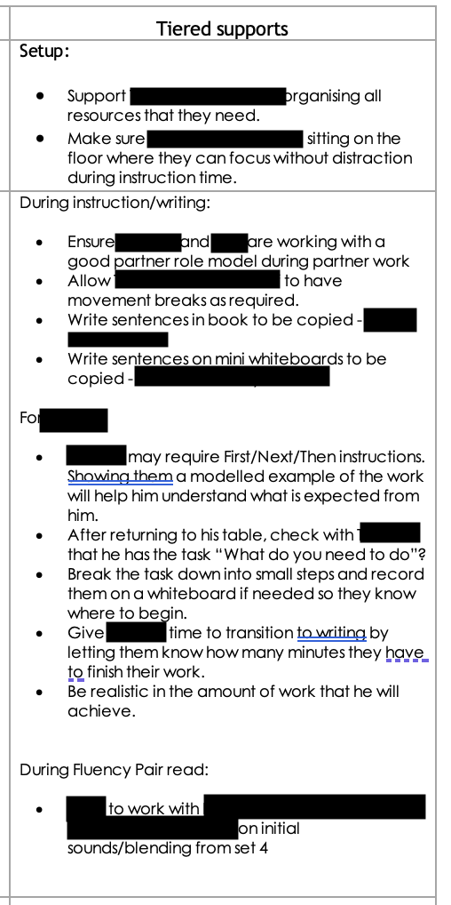
A range of supports for different students within the classroom
Commentary
This excerpt from planning document demonstrates my ability to identify strategies that support inclusive participation and engagement in classroom activities.
The planned “Tiered Supports” demonstrate an understanding that students may experience different barriers to accessing learning and participating successfully. Strategies such as assisting students to organise materials, providing First/Next/Then instructions, allowing movement breaks and giving advance notice of transition times are designed to reduce cognitive, organisational and behavioural demands while supporting students’ independence. Some of the supports are responsive to individual students rather than assuming that a single approach will meet the needs of the whole class, although some supports such as advance warning of transition times can assist everyone.
Anticipating potential barriers and incorporating adjustments into lesson planning helps to create a classroom environment where students are more able to participate. As an inexperienced teacher, having these supports included in planning documents and runsheets makes inclusion easier to manage and helps to ensure that no-one in the classroom gets overlooked.
I should also note that I did not develop these supports alone–they were planned in collaboration with my mentor teacher. I think this demonstrates that working collaboratively with others, in this case colleagues, is also an important strategy for identifying and planning to include diverse learners.
4.2 Manage classroom activities
“Demonstrate the capacity to organise classroom activities and provide clear directions.”
Evidence
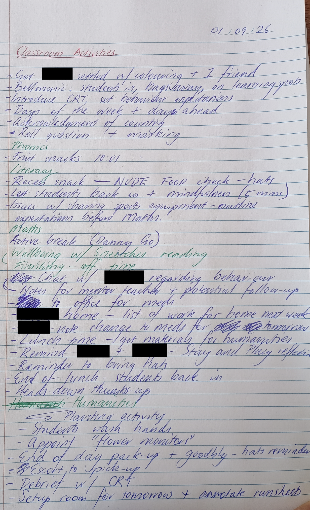
An outline of classroom activities organised and managed in a given day
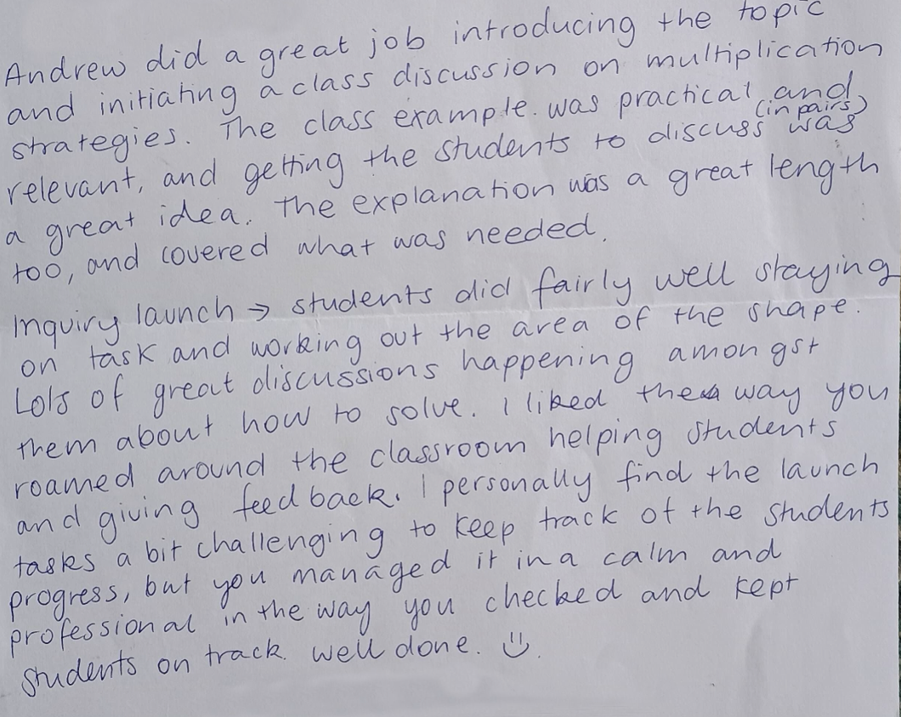
Feedback from another teacher about my management of a Maths lesson
Commentary
This evidence demonstrates my capacity to organise classroom activities, manage competing demands and provide clear directions. My diary entry shows the breadth of organisational responsibilities involved in a typical school day beyond just lessons, including welcoming and settling a new student, communicating the daily schedule, managing lessons and breaks, providing reminders and responding to behaviour. It demonstrates my ability to maintain an organised classroom environment while adapting to the (sometimes quite changeable) requirements of any given schoolday. Feedback from my supervising teacher further supports this, particularly in relation to my management of a mathematics lesson involving transitions between paired discussion, whole-class discussion and independent activities. I provided students with clear expectations and directions as they moved between these activities, helping to maintain engagement and minimise disruption. In other parts of my teaching I demonstrate this standard by planning routines, communicating instructions clearly, managing transitions effectively and monitoring student engagement to ensure classroom activities run smoothly.
4.3 Manage Challenging Behaviour
“Demonstrate knowledge of practical approaches to manage challenging behaviour.”
Evidence
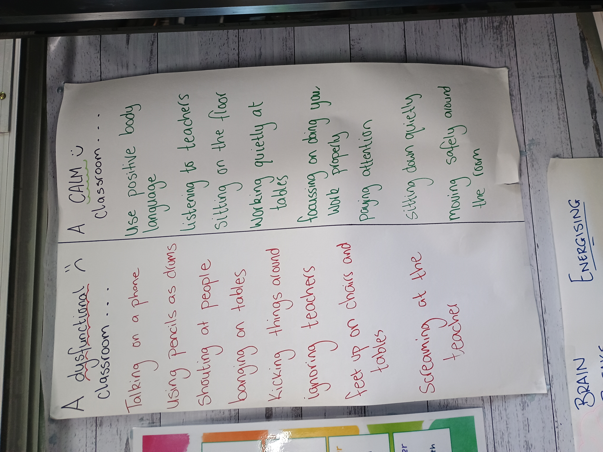
An anchor chart developed with students about what makes a calm classroom
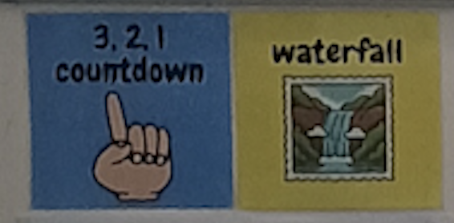
A visual reminder of cues to redirect attention to the teacher
Commentary
This evidence demonstrates my understanding of practical approaches to managing challenging behaviour and promoting a positive classroom environment. My anchor chart contrasts the characteristics of a calm, functional classroom with those of a dysfunctional classroom, helping to identify behaviours and classroom conditions that can either support or hinder learning. This demonstrates an understanding that effective behaviour management involves more than responding to challenging behaviour after it occurs. It also requires establishing clear expectations, routines and conditions that promote positive behaviour. By explicitly identifying what productive classroom behaviour looks like, I can communicate expectations clearly and help students develop an understanding of appropriate participation.
More broadly, I demonstrate this standard by using proactive and consistent behaviour management strategies, building positive relationships with students and responding to behaviour calmly and fairly. Strategies for pre-empting and handling minor behavioural issues include things like proximity and positioning, non-verbal and verbal cues (eg. “Hands on top”, countdowns or “waterfall”), positive redirection, and reinforcement of expected behaviours.
4.4 Maintain Student Safety
“Describe strategies that support students’ wellbeing and safety working within school and/or system, curriculum and legislative requirements.”
Evidence
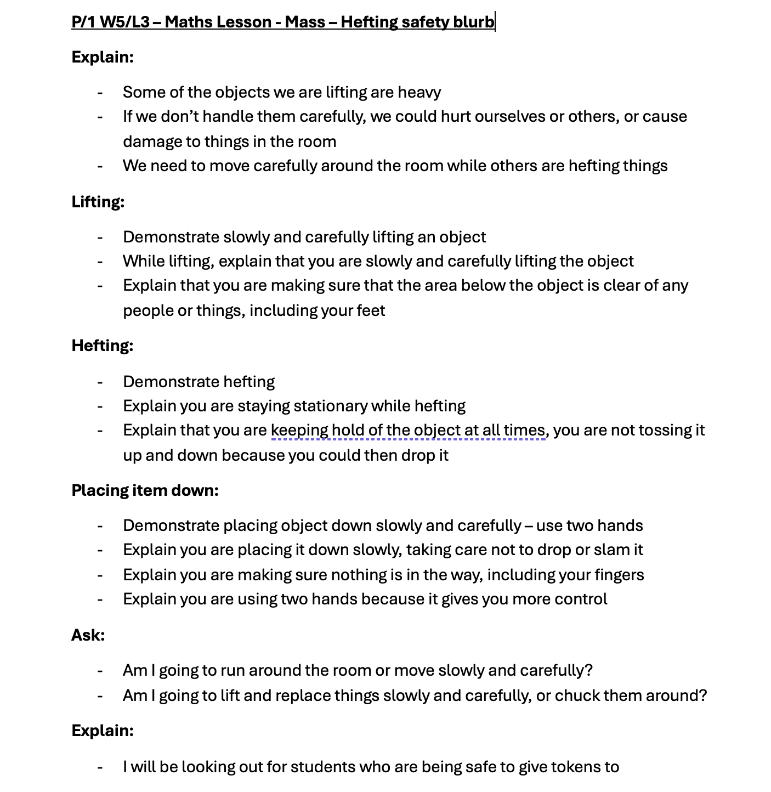
A blurb on how to heft objects safely
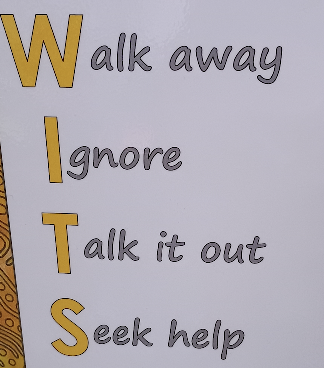
A poster showing strategies for handling problems at home and at school
Commentary
As part of a mathematics lesson involving hefting, I included explicit safety guidance to ensure students understood how to handle materials safely and participate without unnecessary risk. This demonstrates that safety considerations are embedded within my lesson planning rather than treated as an afterthought. I consider physical, social and emotional safety when planning learning experiences, including identifying potential hazards. This extends to assessing the suitability of resources.
I also explicitly teach safe behaviours and strategies for resolving problems involving different situations and different degrees of seriousness. The WITS framework was something I taught students, supported by examples of actual class or schoolyard issues or from imagined scenarios. More generally, I support student wellbeing by establishing clear routines, expectations and boundaries, supervising students, and creating an environment where students feel respected and comfortable seeking help. I take all these steps in light of my responsibility to follow school policies, curriculum requirements and relevant legislation relating to student safety, wellbeing and my duty of care as a teacher.
4.5 Use ICT safely, responsibly and ethically
“Demonstrate an understanding of the relevant issues and the strategies available to support the safe, responsible and ethical use of ICT in learning and teaching.”
Evidence
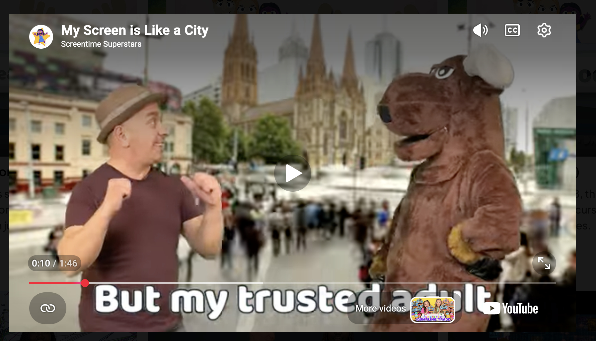
A video resource about navigating content and contact risks online
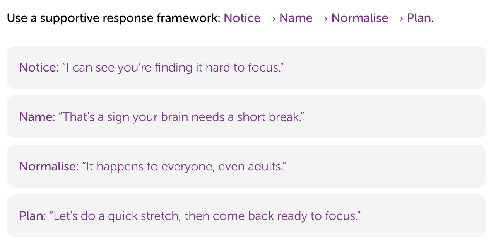
A supportive response framework around managing screen time
Discussion
In addition to the beneficial potential of digital technologies and online spaces, educators must have an understanding of the associated risks. eSmart provides a typology of risk known as the “4C”s, comprising “Content (what they see), Contact (who they interact with), Conduct (how they behave), and Compulsion (how they manage screen use)”.
One strategy is to relate online risks to situations students are more familiar with, such as family outings, or playground interactions. The screenshot above is from a resource I showed to the class about content and contact risks. Through song, it likens digital content to exploring a city, encouraging students to acknowledge that “not everything is for me” and to seek the support of trusted adults for help navigating the space.
This video was embedded in another live video resource that alluded to a Moose character’s overuse of their device, which was discussed with the class. For managing screen usage, a supportive response framework such as the “Notice - Name - Normalise - Plan” framework (also from eSmart) can encourage learners to reflect on and device usage without feeling shamed. I modelled this with reference to the Moose character.
Standard 5 - Assess, provide feedback and report on student learning
5.1 Assess student learning
“Demonstrate understanding of assessment strategies, including informal and formal, diagnostic, formative and summative approaches to assess student learning.”
Evidence
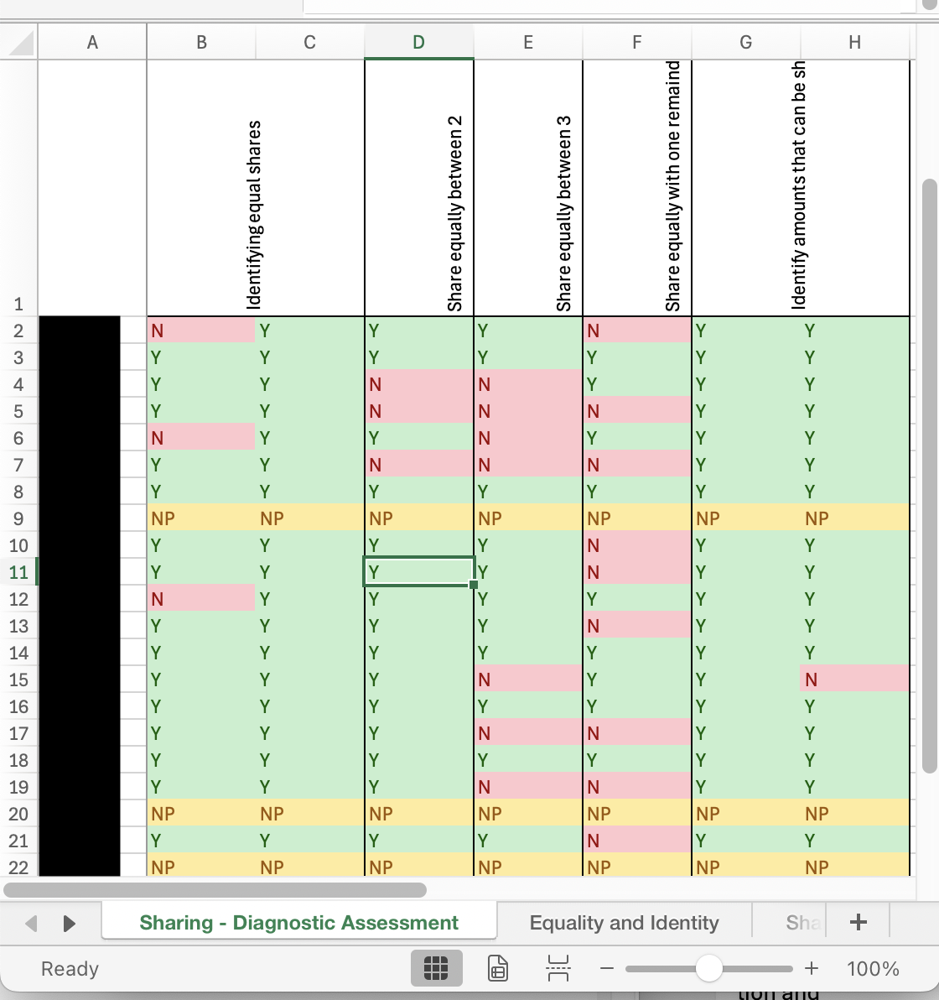
Diagnostic testing of students for Maths lesson sequence
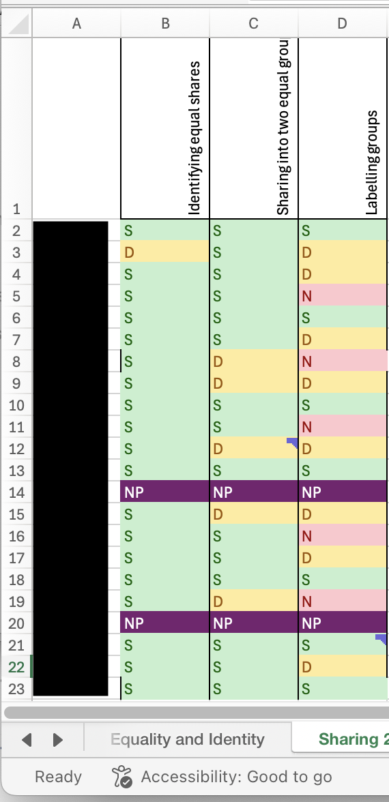
Data from student achievement recorded during Maths lesson sequence
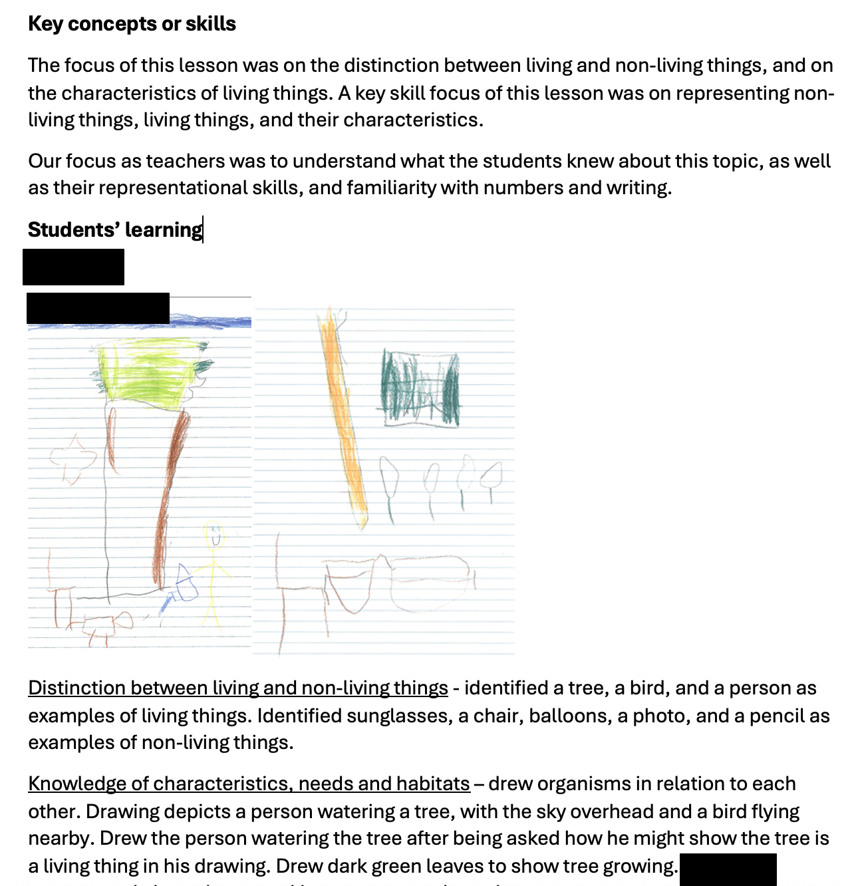
Diagnostic assessment of students’ knowledge of living and non-living things
Commentary
This evidence demonstrates my understanding and application of a range of assessment strategies to monitor and evaluate student learning. The assessment tracker incorporates results from a whole-class diagnostic assessment, providing information about students’ prior knowledge and informing subsequent planning. It also records evidence gathered through informal formative assessment, including observations of student work, worksheets and brief discussions, which I documented through a cross-check before entering the results into the tracker. The analysis of student drawings shows how diagnostic assessment information can be interpreted to gain insight into students’ pre-existing knowledge about a subject.
I think this demonstrates my understanding of the different types of assessment. Diagnostic assessment is used to establish students’ existing knowledge and identify learning needs, while formative assessment occurs throughout teaching to monitor progress and provide information that can inform instruction and support student learning. Summative assessment evaluates learning at the conclusion of a sequence or unit against intended outcomes. The trackers and analysis demonstrate my capacity to collect, record and use these different types of assessment evidence to develop an informed understanding of student learning.
5.2 Provide feedback to students on their learning
“Demonstrate an understanding of the purpose of providing timely and appropriate feedback to students about their learning.”
Evidence
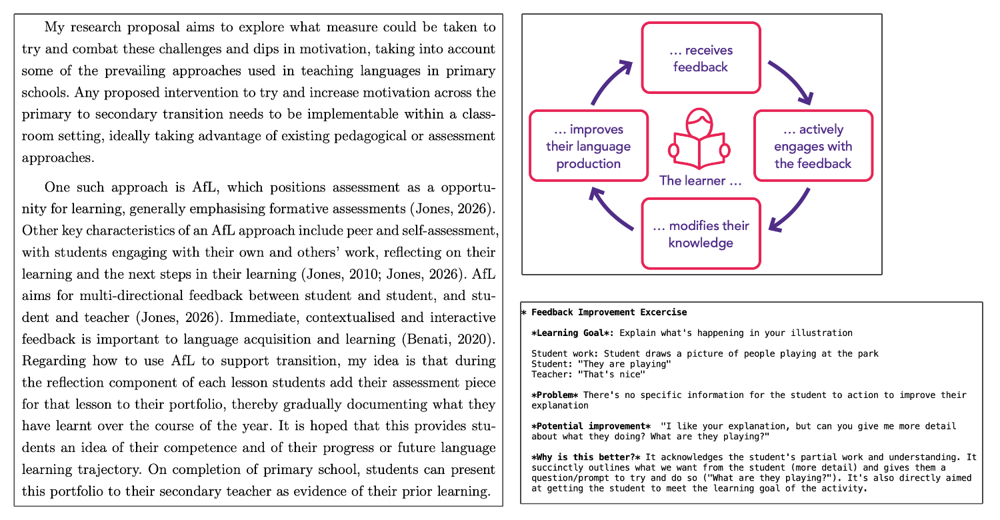
Feedback improvement exercise, assignment excerpt and infographic
Commentary
The feedback improvement exercise illustrates the importance of providing useful and immediate feedback to assist learners. Effective feedback, as in the example, should address partial understanding, be specific to particular learning goals and tasks, and provide actionable advice to guide improvement. The improved feedback does not do the thinking for the student, and instead prompts them to consider how they can address the intended learning goal. The timing of this feedback is important too, as it allows the student to act on guidance while the learning experience remains relevant, supporting improvement.
The assignment excerpt demonstrates my understanding of the purpose of feedback to support student learning in a specific context. In my assignment, I discussed the role of feedback in supporting language learners, exploring the role of feedback in helping students develop language skills and how it could be used to support the transition to secondary school.
I also included an infographic (Kerr, 2020) because I think it demonstrates both the steps in the process of providing feedback and its ongoing and cyclical nature. Feedback is a less an end goal and more an integral part of the process of learning.
5.3 Make consistent and comparable judgements
“Demonstrate understanding of assessment moderation and its application to support consistent and comparable judgements of student learning.”
Evidence - Moderation exercise
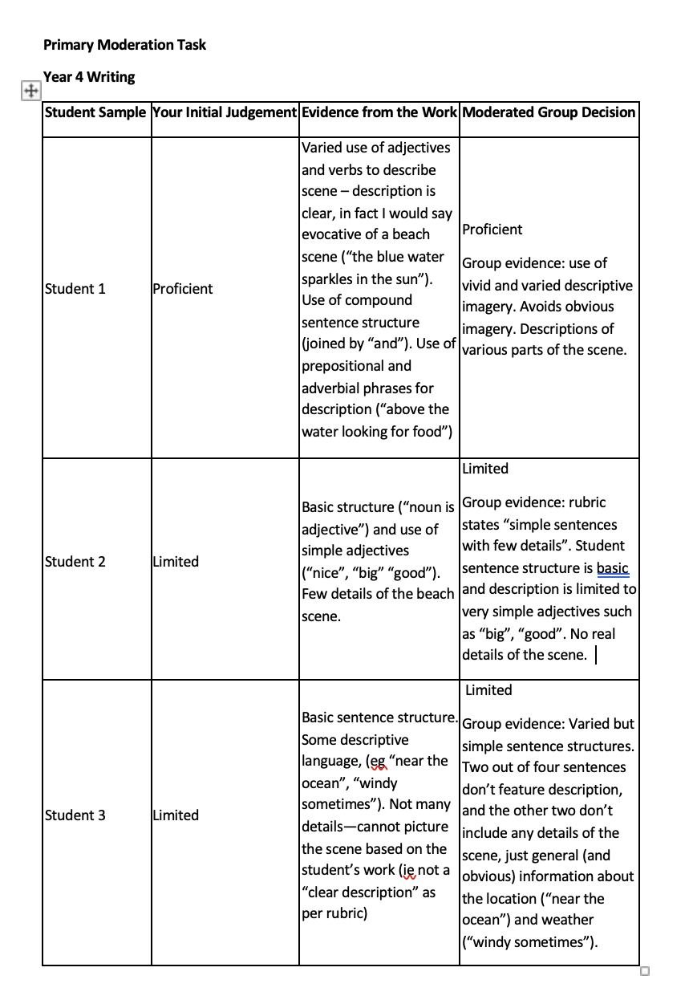
Part of a moderation exercise undertaken with other pre-service teachers
Commentary
This is an excerpt from a moderation practice activity I undertook with other preservice teachers. During the moderation activity, I independently assessed samples of students’ writing before discussing my judgements with other student teachers. We compared our interpretations of the students’ work, justified our decisions using evidence from the writing and referred to a common rubric to reach an agreed judgement about each student’s achievement.
Because our individual judgments of each students’ work often differed, both due to the interpretation of the work and the rubric used to mark it, the task provided insight into the kind of experience we may encounter when working with others to create a shared understanding of assessment standards and to make consistent judgments. The exercise highlighted the importance of involving others and creating (and test) a robust justification based on evidence and the relevant criteria.
While this was only an exercise, having completed it I can see how effective moderation stands to strengthen teachers’ confidence in their judgements and enables student achievement to be compared meaningfully, and how it supports fair and reliable assessment practices.
5.4 Interpret student data
“Demonstrate the capacity to interpret student assessment data to evaluate student learning and modify teaching practice.”
Evidence
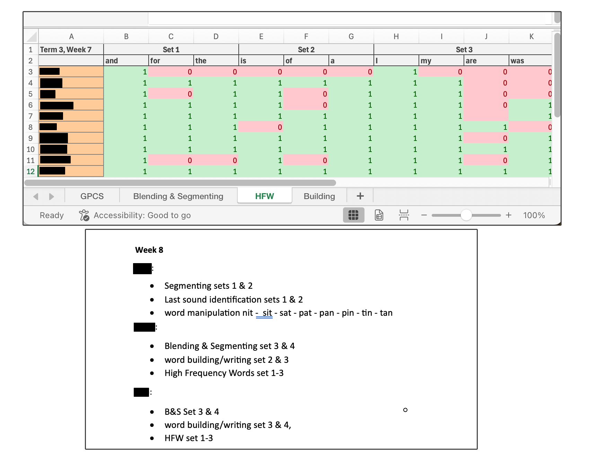
Use of student data to plan and implement phonics interventions
Commentary
I included this screenshot of assessment data and planned phonics interventions to illustrate my ability to interpret student assessment data and use it to evaluate learning and modify teaching practice. The phonics assessment data provided a picture of students’ current knowledge and identified areas where particular students required additional support. Working with my mentor teacher, I used this information to plan targeted phonics interventions, demonstrating that assessment data can directly inform subsequent teaching and that it is about more than just recording student achievement. The planned interventions were responsive to identified learning needs and provided opportunities for students to consolidate specific phonics knowledge and skills. My participation in this process demonstrates an understanding of the relationship between assessment, analysis and instructional decision-making. Effective use of assessment data involves this kind of cycle of assessing, interpreting, planning and teaching.
Portfolio evidence
- Assessment analysis summaries.
- Lesson modifications informed by assessment.
- Reflection journal entries.
- Planning documents.
5.5 Report on student achievement
“Demonstrate understanding of a range of strategies for reporting to students and parents/carers and the purpose of keeping accurate and reliable records of student achievement.”
Evidence
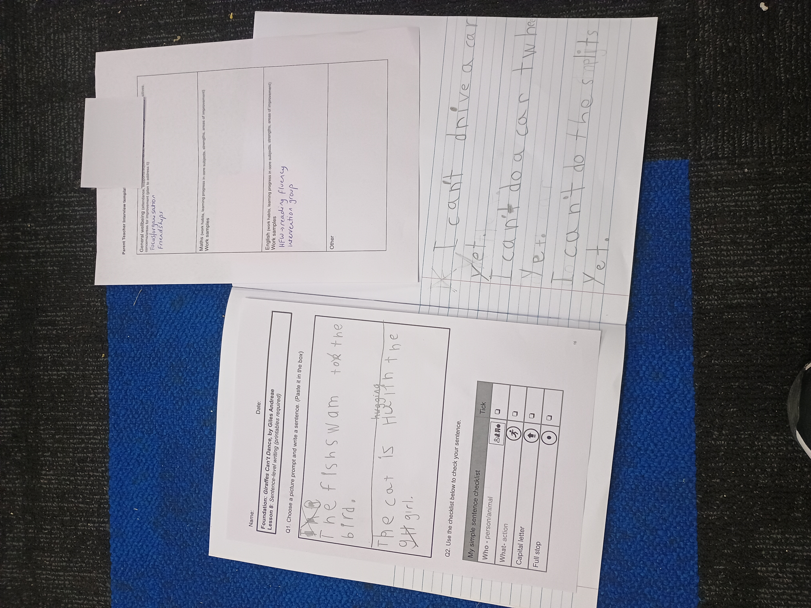
Parent-teacher interview template and examples of student work
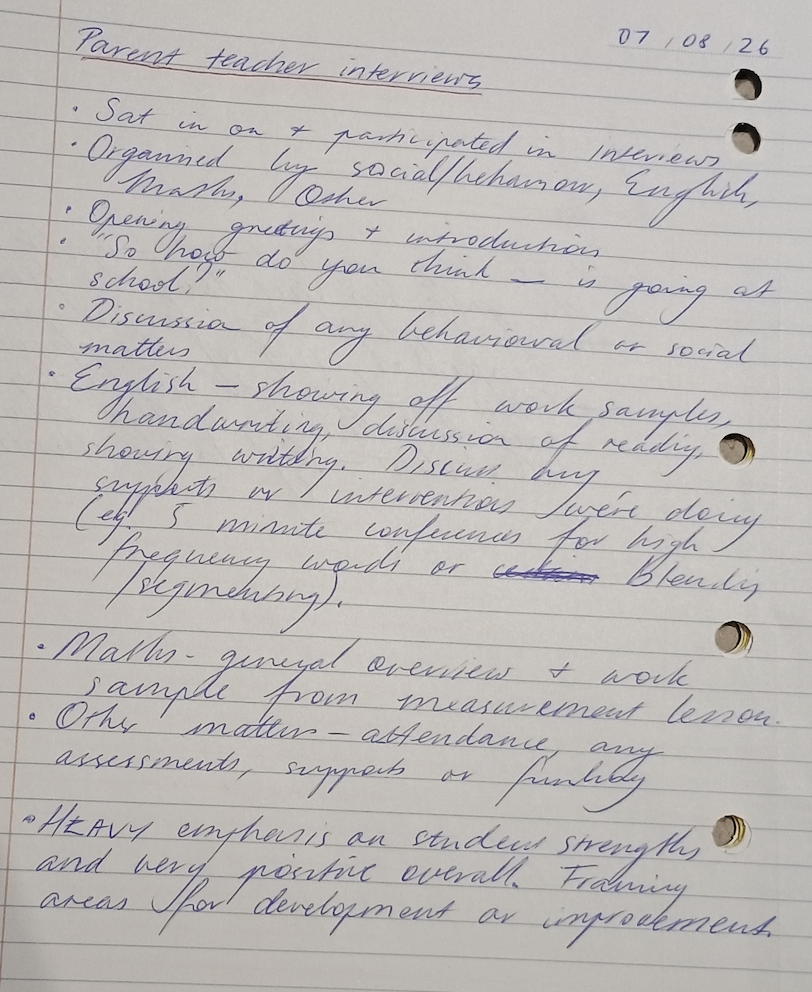
Notes taken immediately after parent-teacher interviews
Commentary
During my final placement I had the opportunity to both help prepare for and participate in parent-teacher interviews. Above is a picture of an interview template used by my mentor teacher along with student work samples to show to their parents.
The interview template provides a structure for communicating student progress and wellbeing, while the work samples give concrete evidence of learning and support discussion with families. Using student work allows feedback to be specific and grounded in observable achievement rather than impressions or assurances, and provides opportunities to discuss strengths and areas for development.
My mentor teacher commented to me that reporting should ideally be preceded by discussions with student parents and carers–especially for any areas where a student may require support, which should be addressed as soon as possible and not come as a surprise. In my notes I recorded that there was a heavy emphasis on student strengths and interviews were overall very positive, with concerns framed as areas for improvement or development, and usually any planned supports or interventions were also explained. I also noted that the interviews had planned points to invite parents to share their thoughts, such as the recurring question “So how do you think … is going at school?”
Accurate records of student achievement are essential for (among other things), supporting this communication between teachers and families, and ensuring continuity when students transition between classes or teachers. But they also serve accountability purposes, providing evidence of student learning and planned supports.
Standard 6 - Engage in professional learning
6.1 Identify and plan professional learning needs
“Demonstrate an understanding of the role of the Australian Professional Standards for Teachers in identifying professional learning needs.”
Evidence
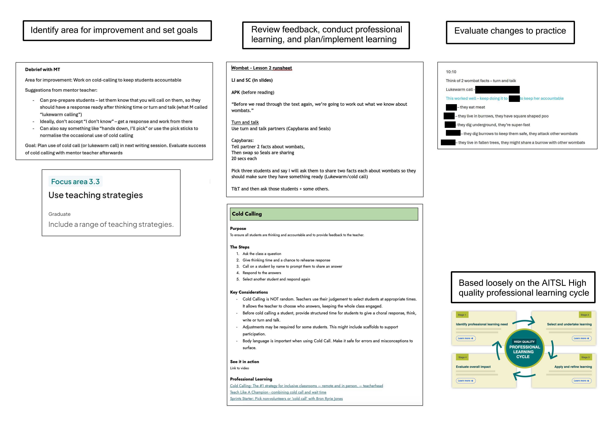
Identifying opportunity for improvement, selecting learning, planning, and evaluating changes
Commentary
This evidence demonstrates my understanding of the role of the Australian Professional Standards for Teachers in identifying and responding to professional learning needs. I receieved feedback about my use of cold-calling in the classroom following one of my lessons. I discussed the feedback with my mentor teacher, then engaged in professional learning through the school’s teaching handbook and video resources, and planned to increase my use of cold-calling in subsequent lessons. I evaluated the implementation with my mentor teacher and used her feedback to reflect on the effectiveness my use of cold-calling and to identify further areas for development (in this case, being consistent with the strategy). This process reflects AITSL’s High Quality Professional Learning Cycle, involving identifying needs, focusing on learning, implementing new knowledge and skills, and evaluating impact. I identified AITSL Standard 3.3 (relating to the use of a range of teaching strategies) as being relevant to this particular development need, and made a note of this as evidence of both my growth in this area and something to monitor for further development. I think this evidence demonstrates how I can use the Standards as a framework for ongoing professional learning and improvement.
6.2 Engage in professional learning and improve practice
“Understand the relevant and appropriate sources of professional learning for teachers.”
Evidence
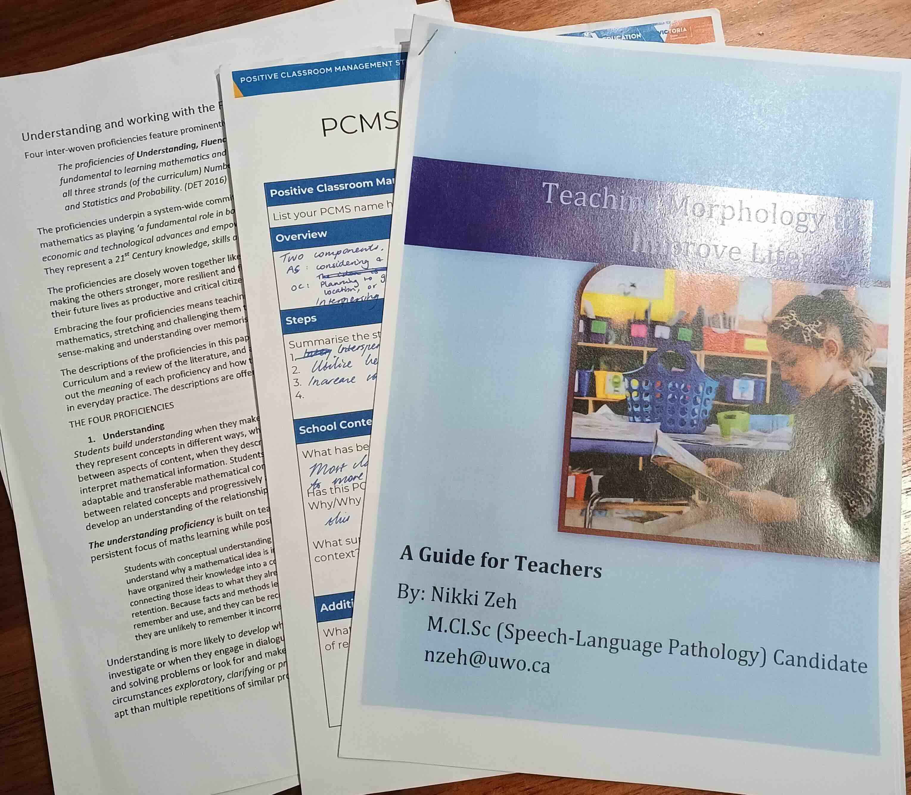
Various documents for professional learning sessions I attended
Commentary
During my placements, I attended numerous professional development sessions and staff meetings, including a Maths School Improvement Team meeting on multiplicative thinking, a session on Positive Classroom Management Strategies, and a session on a school’s rollout of SMART spelling instruction. These kinds of professional development sessions provide exposure current teaching approaches, professional knowledge and strategies that can be applied directly in the classroom.
The sessions I attended largely involved school-organised learning and collaboration with experienced colleagues, but other sources of professional learning include professional teaching associations, curriculum authorities, other non-teaching professionals (for example, specialists on childhood behaviour or psychology), and accredited training providers. I also want to note the importance of engaging Local Aboriginal Education Consultative Groups to assist school staff in developing inclusive and authentic educational programs and in forming productive partnerships with Koorie parents and carers.
6.3 Engage with colleagues and improve practice
“Seek and apply constructive feedback from supervisors and teachers to improve teaching practices.”
Evidence
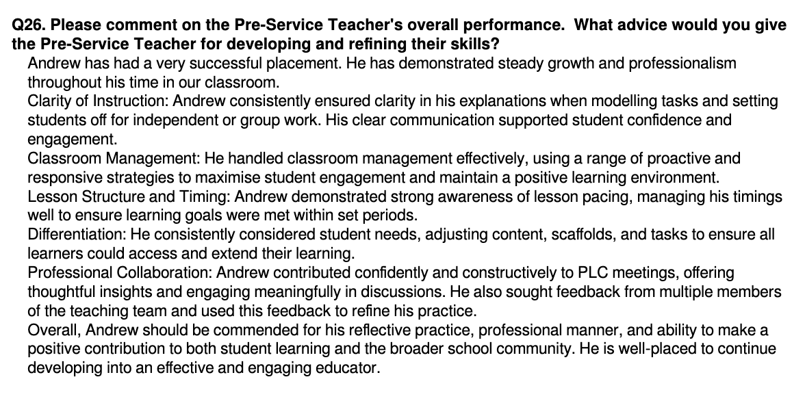
Comments from a mentor teacher about my collaboration with colleagues
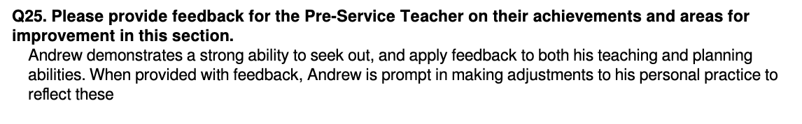
Comments about my ability to seek and implement feedback
Commentary
This evidence demonstrates my capacity to seek, receive and apply constructive feedback from supervisors and teachers to improve my teaching practice. Feedback from my mentor teachers specifically highlighted my willingness to actively seek guidance and my promptness in implementing suggested adjustments. Rather than relying on the perspective of a single teacher, I also sought feedback from different members of the teaching team, recognising the value of drawing on varied professional experience and perspectives. This reflects an understanding that constructive feedback is an important component of ongoing professional growth. I use feedback to critically reflect on the effectiveness of my teaching, identify areas for improvement and make practical changes to future lessons and classroom practice. I think I demonstrate this standard by approaching feedback with openness, responding professionally to suggestions and translating advice into observable changes in my practice. This ongoing cycle of seeking feedback, reflection and adjustment supports my development as an effective and responsive teacher.
6.4 Apply professional learning and improve student learning
“Demonstrate an understanding of the rationale for continued professional learning and the implications for improved student learning.”
Evidence
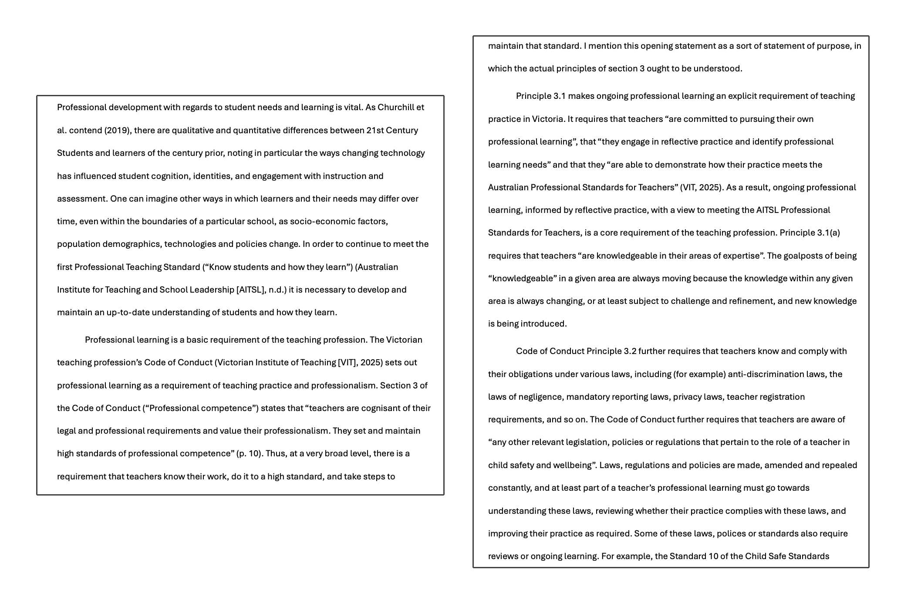
Assignment excerpt on continued professional learning
Commentary
The excerpt above is from an assignment in which I gave a rationale for continued professional learning and its implications for improved student learning, with reference to the VIT Code of Ethics and Code of Conduct, as well as the AITSL Standards.
I examined ongoing professional development as an integral responsibility of the teaching profession, drawing on the VIT Code of Conduct, VIT Code of Ethics and AITSL Standards. I recognised that teachers have professional obligations to maintain and develop their practice, remain informed about changing laws, regulations and policies, and continually respond to the needs of their students. In particular, the AITSL Standards highlight the importance of knowing students, but students and their learning needs change over time, creating an ongoing need for teachers to develop their knowledge and skills. So while continued professional learning has to do with compliance with professional requirements, it also enables teachers to respond to emerging challenges and use current knowledge to provide effective learning experiences. Ultimately, professional growth contributes directly to improved student outcomes.
Standard 7 – Engage professionally with colleagues, parents/carers and the community
7.1 Meet professional ethics and responsibilities
“Understand and apply the key principles described in codes of ethics and conduct for the teaching profession.”
Evidence
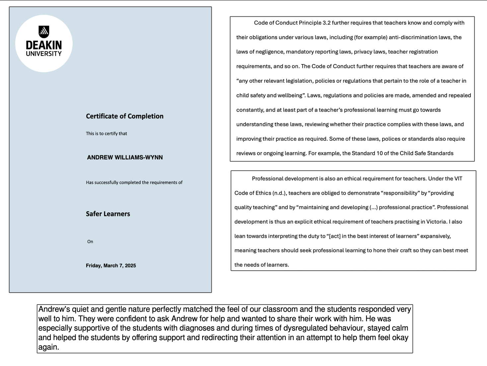
Certificate for Safer Learners module, comments from mentor teacher and assignemnt excerpts
Commentary
This evidence demonstrates my understanding and application of the key ethical and professional principles governing the teaching profession. Completion of the Safer Learners training shows I understand my responsibility to maintain student safety and wellbeing, which includes understanding matters such as identifying and reporting abuse and supporting students to use online spaces safely.
Feedback from my mentor teacher regarding my development of productive relationships with students further demonstrates my understanding of the importance of respectful, inclusive and professional interactions that support student learning and wellbeing.
The excerpt from my assignment deals directly with the VIT Code of Ethics and Code of Conduct, including teachers’ responsibility to engage in ongoing professional learning and maintain their professional knowledge.
Together, these examples demonstrate an understanding that ethical teaching involves acting with integrity, respect and responsibility, and that this entails respecting the dignity and rights of students, maintaining professional boundaries, promoting equity and inclusion, protecting students from harm, and fulfilling professional responsibilities to students, colleagues, families and the broader community. This evidence shows that I understand these principles and seek to apply them in practice.
7.2 Comply with legislative, administrative and organisational requirements
“Understand the relevant legislative, administrative and organisational policies and processes required for teachers according to school stage.”
Evidence
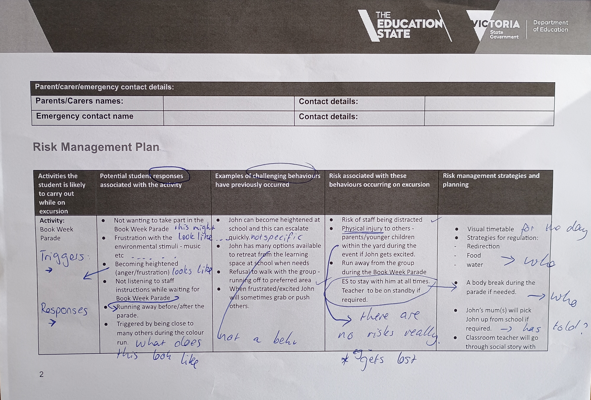
Annotated practice Risk Management plan from staff training session
Commentary
This evidence demonstrates my understanding of the legislative, administrative and organisational policies and processes that guide teachers’ responsibilities for student safety.
All teachers working with students owe them a duty of care and they must take reasonable steps to identify and prevent or mitigate the risks of reasonably foreseeable harms. This is both a common law duty and a requirement of various Victorian Government policies and standards, including its “Duty of Care” policy, the Risk Management Standard and the Victorian Child Safe Standards.
The annotated risk management plan above was part of a professional development session about the need to provide specific and illustrative details of risks anticipated for both individual and general risk management plans, and the strategies suitable for managing them.
This professional development session was organised by school leadership and senior teaching staff, and arose from a review conducted to comply with Standard 10 of the Child Safe Standards (“Review of Child Safety Practices”), which I think also illustrates how requirements can differ depending on school and career stage.
7.3 Engage with the parents/carers
“Understand strategies for working effectively, sensitively and confidentially with parents/carers.”
Evidence
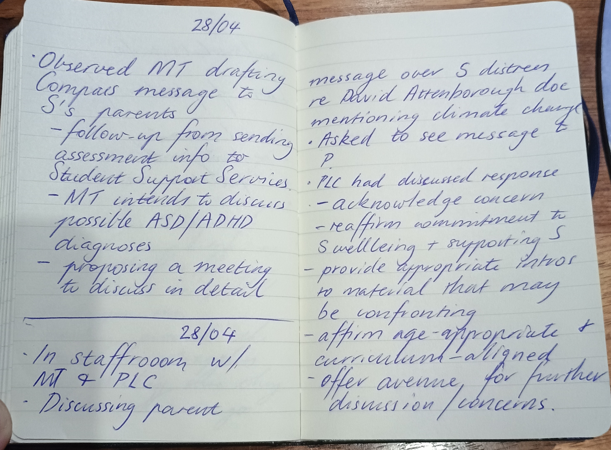
Diary notes regarding student support and response to student distress over climate change documentary
Commentary
I included these diary notes because I think they illustrate how to work with parents and carers effectively, confidentially and with sensitivity.
As part of our professional code of conduct and code of ethics, we are obliged to maintain professional relationships with students’ parents and carers and to work productively and collaboratively with them. If parents or carers raise concerns about their child, we need to consider their concerns, respond to them appropriately and do so in a timely way, following up as needed. As in the examples above, this might involve scheduling a meeting to discuss next steps confidentially with a child’s parent or carer, or simply acknowleding their concerns, explaining the school’s approach to addressing the parent’s concerns, and leaving room for further discussion. I think the note regarding the distress over the documentary also shows how we can provide assurance regarding our use of potentially confronting educational resources or other choices without disregarding parent or carer concerns.
7.4 Engage with professional teaching networks and broader communities
“Understand the role of external professionals and community representatives in broadening teachers’ professional knowledge and practice.”
Evidence
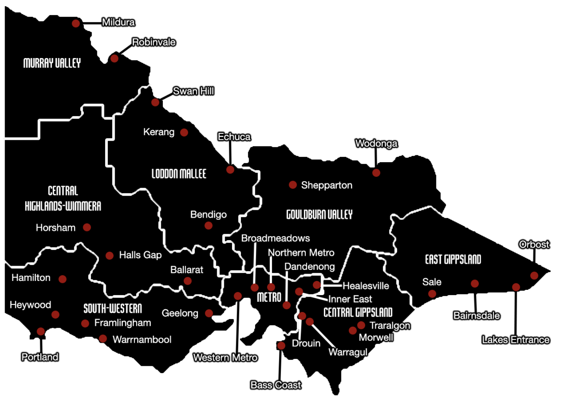
VAEAI’s regional map
A meet-up held by the Victorian Indonesian Language Teachers Association
Commentary
Teaching is fundamentally collaborative. Effective schools are characterised by professional relationships in which teachers share knowledge, reflect together and work collectively to improve student learning. Working in a specialist role, like language teaching, may mean being the only teacher in that curriculum area in a given school. This has implications for activities involving colleagues, such as peer observation, reflection, joint planning and so on. Professional associations such as Language Teachers Victoria (LTV) and Victorian Indonesian Language Teachers Association (VILTA) can help to address this shortcoming, providing resources, support, professional development, and opportunities for discussion. I am currently a member of VILTA, hence the image for the Ngumpul Guru (“Teacher Gathering”)event.
Constructing authentic and rich educational programs that promote reconciliation with Aboriginal and Torres Strait Islander people necessarily involves consultation with local Aboriginal and Torres Strait Islander communities. In Victoria, VAEAI organises regional LAECGs which work together to promote better outcomes for Aboriginal and Torres Strait Islander students, and to provide input on culturally inclusive educational programs.